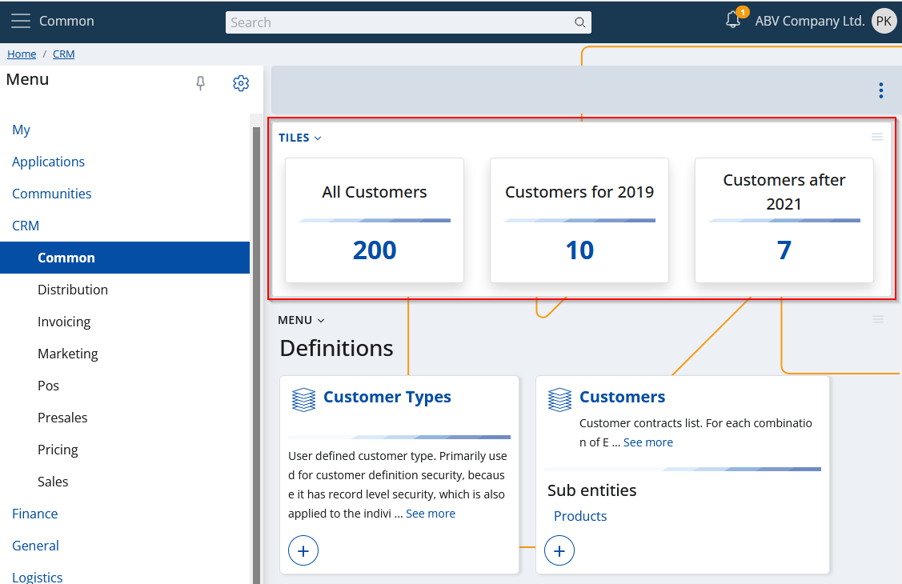
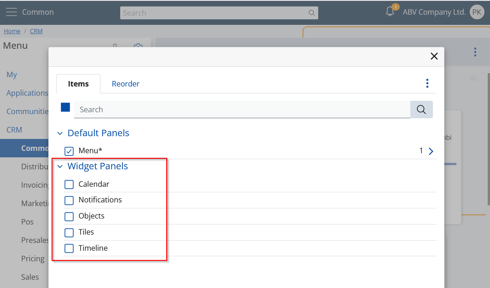

Overview
My apps is a generic name for a special kind of functionality in ERP.net Web Client. These are interactive applications that can "live independently"- i.e., you can use them as standalone apps. In most cases, they present aggregated or more complex data in a convenient way. My apps are directly related and are also a key extension of the Social ERP concept. They can be accessed through their section in the main menu.
A classic example of one "My app" is the calendar. It's a standalone application that visualizes a calendar, taking up the entire page.

Of course, this is not just a calendar :) You can read more about it in the separate topic.
Widgets
A specific feature of each "My app" is that it can be visualized not only independently, as given above, but also in its own panel.
Note
Panels that host My apps are called widget panels or simply widgets.
So what do you think you can do with widget panels? You can visualize them anywhere. Yes, literally everywhere. In any form in ERP.net Web Client. What's more, they are smart - i.e. they take into account the context in which they are displayed and show only relevant content.
See, for example, My Tiles. How much information it displays in its main screen:

And see now what it visualizes if placed in Crm -> Common:

Or even more specifically - Crm -> Common -> Price Lists:

This is the idea - contextual information at your fingertips, easily accessible anywhere.
Visualizing a widget panel
Just go to the form where you want to add it.
From the main settings, click "Show/Hide panels".

Expand the "Widget Panels" category and just check the ones you want to include. 
Done.

The widgets in the example were calendar and tiles. You can find more information about them, as well as all other widgets, through the menu section on the left.